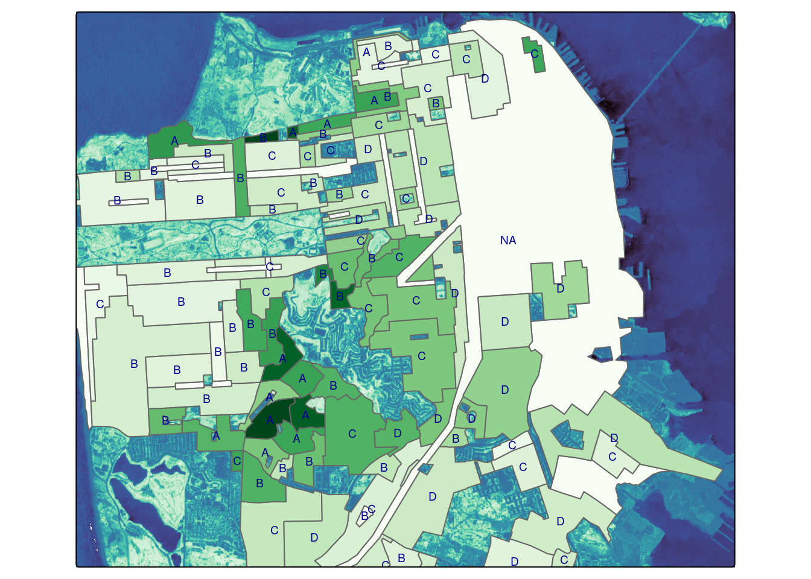

library(rstac)
library(gdalcubes)
library(stars)
library(tmap)
library(dplyr)
gdalcubes::gdalcubes_options(parallel = TRUE)Examining Environmental Justice through Open Source, Cloud-Native Tools
This executable notebook provides an opening example to illustrate a cloud-native workflow in both R and python. Pedagogy research emphasizes the importance of “playing the whole game” before breaking down every pitch and hit. We intentionally focus on powerful high-level tools (STAC API, COGs, datacubes) to illustrate how a few chunks of code can perform a task that would be far slower and more verbose in a traditional file-based, download-first workflow. Note the close parallels between R and Python syntax. This arises because both languages wrap the same underlying tools (the STAC API and GDAL warper) and handle many of the nuisances of spatial data – from re-projections and resampling to mosaic tiles – without us noticing.
import odc.stac
import rioxarray
from pystac_client import Client
import geopandas as gpd
from rasterstats import zonal_stats import dask.distributed
client = dask.distributed.Client()/home/cboettig/.local/lib/python3.10/site-packages/distributed/node.py:182: UserWarning: Port 8787 is already in use.
Perhaps you already have a cluster running?
Hosting the HTTP server on port 42599 instead
warnings.warn(odc.stac.configure_rio(cloud_defaults=True, client=client)Data discovery
The first step in many workflows involves discovering individual spatial data files covering the space, time, and variables of interest. Here we use a STAC Catalog API to recover a list of candidate data. We dig deeper into how this works and what it returns in later recipes. This example searches for images in a lon-lat bounding box from a collection of Cloud-Optimized-GeoTIFF (COG) images taken by Sentinel2 satellite mission. This function will not download any imagery, it merely gives us a list of metadata about available images, including the access URLs.
box <- c(xmin=-122.51, ymin=37.71, xmax=-122.36, ymax=37.81)
start_date <- "2022-06-01"
end_date <- "2022-08-01"
items <-
stac("https://earth-search.aws.element84.com/v0/") |>
stac_search(collections = "sentinel-s2-l2a-cogs",
bbox = box,
datetime = paste(start_date, end_date, sep="/"),
limit = 100) |>
ext_query("eo:cloud_cover" < 20) |>
post_request()box = [-122.51, 37.71, -122.36, 37.81]
items = (
Client.
open("https://earth-search.aws.element84.com/v1").
search(
collections = ['sentinel-2-l2a'],
bbox = box,
datetime = "2022-06-01/2022-08-01",
query={"eo:cloud_cover": {"lt": 20}}).
item_collection()
)We pass this list of images to a high-level utilty (gdalcubes in R, odc.stac in python) that will do all of the heavy lifting. Using the URLs and metadata provided by STAC, these functions can extract only our data of interest (given by the bounding box) without downloading unnecessary regions or bands. While streaming the data, these functions will also reproject it into the desired coordinate reference system – (an often costly operation to perform in R) and can potentially resample or aggregate the data to a desired spatial resolution. (The R code will also resample from images in overlapping areas to replace pixels masked by clouds)
col <- stac_image_collection(items$features, asset_names = c("B08", "B04", "SCL"))
cube <- cube_view(srs ="EPSG:4326",
extent = list(t0 = start_date, t1 = end_date,
left = box[1], right = box[3],
top = box[4], bottom = box[2]),
dx = 0.0001, dy = 0.0001, dt = "P1D",
aggregation = "median", resampling = "average")
mask <- image_mask("SCL", values=c(3, 8, 9)) # mask clouds and cloud shadows
data <- raster_cube(col, cube, mask = mask)data = odc.stac.load(
items,
crs="EPSG:4326",
bands=["nir08", "red"],
resolution=0.0001,
bbox=box
)We can do arbitrary calculations on this data as well. Here we calculate NDVI, a widely used measure of greenness that can be used to determine tree cover. (Note that the R example uses lazy evaluation, and can thus perform these calculations while streaming)
ndvi <- data |>
select_bands(c("B04", "B08")) |>
apply_pixel("(B08-B04)/(B08+B04)", "NDVI") |>
reduce_time(c("mean(NDVI)"))
ndvi_stars <- st_as_stars(ndvi)red = data.red
nir = data.nir08
ndvi = (((nir - red) / (red + nir)).
resample(time="MS").
median("time", keep_attrs=True).
compute()
)
# mask out bad pixels
ndvi = ndvi.where(ndvi <= 1)And we plot the result. The long rectangle of Golden Gate Park is clearly visible in the North-West.
mako <- tm_scale_continuous(values = viridisLite::mako(30))
fill <- tm_scale_continuous(values = "Greens")
tm_shape(ndvi_stars) + tm_raster(col.scale = mako)import matplotlib as plt
cmap = plt.colormaps.get_cmap('viridis') # viridis is the default colormap for imshow
cmap.set_bad(color='black')
ndvi.plot.imshow(row="time", cmap=cmap, add_colorbar=False, size=5)<xarray.plot.facetgrid.FacetGrid object at 0x7fa1186efe20>
From NDVI to Environmental Justice
We examine the present-day impact of historic “red-lining” of US cities during the Great Depression using data from the Mapping Inequality project. All though this racist practice was banned by federal law under the Fair Housing Act of 1968, the systemic scars of that practice are still so deeply etched on our landscape that the remain visible from space – “red-lined” areas (graded “D” under the racist HOLC scheme) show systematically lower greenness than predominately-white neighborhoods (Grade “A”). Trees provide many benefits, from mitigating urban heat to biodiversity, real-estate value, to health.
Zonal statistics
In addition to large scale raster data such as satellite imagery, the analysis of vector shapes such as polygons showing administrative regions is a central component of spatial analysis, and particularly important to spatial social sciences. The red-lined areas of the 1930s are one example of spatial vectors. One common operation is to summarise the values of all pixels falling within a given polygon, e.g. computing the average greenness (NDVI)
sf <- st_read("/vsicurl/https://dsl.richmond.edu/panorama/redlining/static/downloads/geojson/CASanFrancisco1937.geojson") |>
st_make_valid()
poly <- ndvi |> extract_geom(sf, FUN = mean, reduce_time = TRUE)
sf$NDVI <- poly$NDVIndvi.rio.to_raster(raster_path="ndvi.tif", driver="COG")
sf_url = "/vsicurl/https://dsl.richmond.edu/panorama/redlining/static/downloads/geojson/CASanFrancisco1937.geojson"
mean_ndvi = zonal_stats(sf_url, "ndvi.tif", stats="mean")/home/cboettig/.local/lib/python3.10/site-packages/rasterstats/io.py:328: NodataWarning: Setting nodata to -999; specify nodata explicitly
warnings.warn(We plot the underlying NDVI as well as the average NDVI of each polygon, along with it’s textual grade, using tmap. Note that “A” grades tend to be darkest green (high NDVI) while “D” grades are frequently the least green. (Regions not zoned for housing at the time of the 1937 housing assessment are not displayed as polygons.)
tm_shape(ndvi_stars) + tm_raster(col.scale = mako) +
tm_shape(sf) + tm_polygons('NDVI', fill.scale = fill) +
tm_shape(sf) + tm_text("holc_grade", col="darkblue", size=0.6) +
tm_legend_hide()
sf = gpd.read_file(sf_url)
sf["ndvi"] = [x["mean"] for x in mean_ndvi ]
sf.plot(column="ndvi", legend=True)
Are historically redlined areas still less green?
sf |>
as_tibble() |>
group_by(holc_grade) |>
summarise(ndvi = mean(NDVI),
sd = sd(NDVI)) |>
knitr::kable()| holc_grade | ndvi | sd |
|---|---|---|
| A | 0.3201691 | 0.0611824 |
| B | 0.2138027 | 0.0783241 |
| C | 0.1955999 | 0.0564923 |
| D | 0.1949583 | 0.0385485 |
import geopolars as gpl
import polars as pl
(gpl.
from_geopandas(sf).
group_by("holc_grade").
agg(pl.col("ndvi").mean()).
sort("holc_grade")
)
shape: (4, 2)
| holc_grade | ndvi |
|---|---|
| str | f64 |
| "A" | 0.338817 |
| "B" | 0.247294 |
| "C" | 0.231133 |
| "D" | 0.225662 |